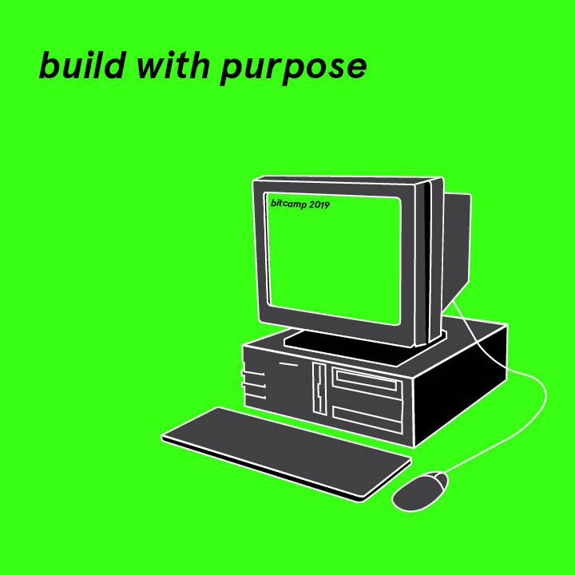
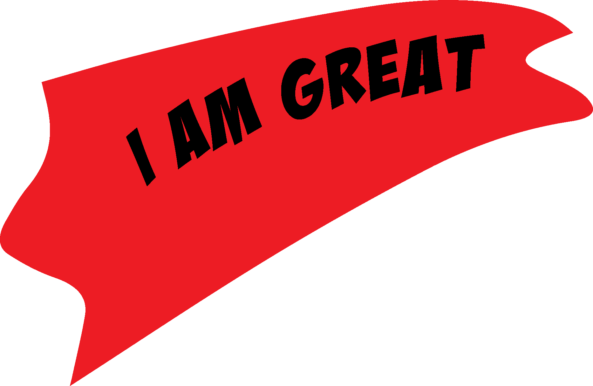
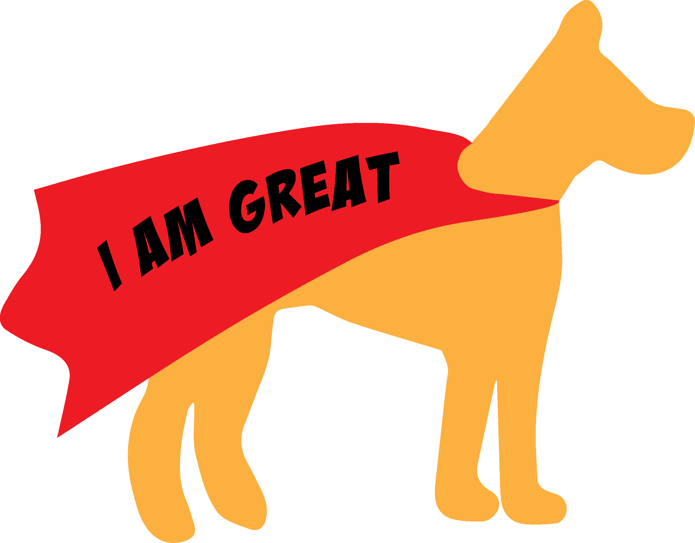

Bitcamp 2019
What did I do this weekend?
A Poster
A Mood Improvement Through Total Health App
Helped Khawaja Shahrukh's Team
They were creating an application to help with grocery shopping and food organization
They mainly had usability issues
- They had a lot of extra features that detracted from the user experience.
- For example, they had notes section with “all notes” and “shopping.” Shopping was for grocery lists and "all notes" was for anything else.
- It was an app for shopping and had nothing to do with writing random notes, so it was confusing why there was an all notes section. I advised them to delete it, but they really wanted to keep it, so I told them to just make it a separate section.
- I advised them to increase margins and change the 3 column grid they were using on an iOS app to 2 column one
- They had an exclamation point icon to indicate when a user was running out of a food/ it was going bad, but for example, the interface would
read
- ! Apples 4
- Oranges 2
- So it was unclear which of the 4 apples was bad or if they were all bad. I told them they needed another page where a user could click a food with the ! icon and get more information.
Something Hype Using Light Blue
Helped Robert Calkins's Team
They were making an application for person to person payments, like Venmo
They also mostly had usability issues. They were only making part of an app, so initially they had no user pathways. I helped them think through their user pathways and create a more robust wireframe to work off of. I helped them organize their information in a more user friendly way.

I advised them to add additional pages instead of having an infinite scroll, simplify their navigation, and put more emphasis on the actual intended use, which was helping organize payments between groups of people, by making the first screen purely imputs, and then the data visualization pages.
A Logo for Stephanie Murphy's Team
They were working on a superhero themed, education/confidence building application, called "I Am Great." I do not know very much about superheros but we spoke and decided on bright colors and a cheerful aesthetic. I made them two final logos, one typemark and one that was more illustrative.
 